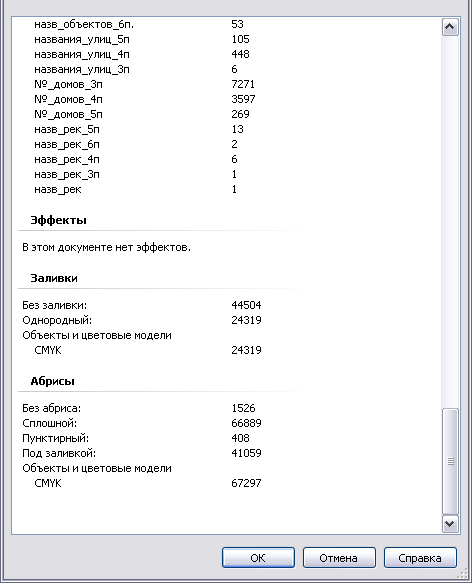

Нехватка оперативной памяти для CorelDraw X4/X5 в Windows7 (64 бит), 8 Гб.
Вадим / 13.07.2011, 20:46/00:41
Форум:
Версия программы:
14.0.0.701 (sp2)
Уважаемые коллеги, у меня проблема - обновленные CorelDraw X4 и X5 зависают при попытке открытия нескольких больших файлов. Корел не может использовать более 1,5 Гб оперативной памяти в Windows7, хотя свободной памяти достаточно. В настройках Корела Х4 установил потреблять 70% оперативной памяти - это более 5 Гб - изменений не произошло. Когда объем потребляемой памяти в диспетчере задач достигает около 1,5 Гб, Корел X5 - выдает ошибку "Out of memory", Корел X4 ничего не выдает - просто виснет. До этого работал с Корел Х3 на Windows XP, 4 Гб - такой проблемы не замечал... Поделитесь опытом, если кто работает с большими файлами или разбирается в Windows7.
На самом деле такая проблема существует.
Во время отрисовки карты при появлении более 15000 объектов Corel начинает подвисать при определенных действиях, в том числе при масштабировании.
Карта рисуется с растровой подложки (размер: 6850x10270 пикс., CMYK 32 бит, разрешение: 300 dpi), размер готового файла: 218 Мб.
Сведения о системе(настроена и оптимизирована, другие приложения работают стабильно) на скринах. Плохо, что Corelу в настройках нельзя "скормить" больше оперативки.
Кстати, пробовал работать с этим файлом на более мощной машине (при только что установленной Windows 7 32 bit и CorelDRAW X5 SP3:
Шасси: Gigabyte LGA1155 GA-Z68X
Камень: Intel Core i5-2500 3.3GHz
Видео: GigaByte GeForce GTX 570 1280MB
ОЗУ: DDR3 4096 MB
- картина та же самая.
Всегда есть обходной путь --а что мешает вашу СМУКовскую подложку перевести в РЖБ -- файл сразу станет на 20-40% меньше...
chally, а если его еще и прилинковать а не внедрять, то совсем меньше :)
а еще можно понизить точность с 300 дпи до 150-200, для отрисовки мне кажется такое разрешение непринципиально, там больше шума.
другое дело что там очень много объектов из-за которых видимо все тормоза.
а если там еще и эффектами типа тени или бленд балуются, то ваще туши свет :)
Дело не в подложке. Работал с этим же файлом без растровой подложки(размер файла около 7 Мб) - все проблемы остаются. Особенно туго Corel соображает при работе с узлами кривой. В файле нет ни одного эффекта.

попробуй отключить оффскрин дравинг (параметры-раб.пространство-монитор-использовать изображение за экраном) ну и переключиться с вида расширенного на обычный. выглядеть будет страшнее, но мож хоть тормозить перестанет.
Рекомендую попробовать раскидать объекты по слоям и выключать по мере ненадобности. Саму растровую карту загнать в поверклип, снять блокировку и отображать только нужный кусок. Карту действительно перевести в RGB, все-таки три байта на одну точку это меньше, чем четыре.
Столкнулся с этой проблемой и расскажу что удалось понять мне (не факт, что прав).
1. У CD всегда наблюдались проблемки работы с памятью. В современных версиях эту работу вообще отдали ОС и убрали из настроек. Всё бы хорошо, если бы...
2. В принцыпе я уже понял, глюки от железа и ОС особо не зависят Тема про семерку, я идейно сижу почти на всех машинах на икспя (ничуть не жалея). Для работы с CD собрал вполне приличную тачку на маме HP с камнем 3.40 х2 и 3 гига памяти с SSD системным диском. Кстати двухядерник выбрал, поскольку убедился, что почти все операции по прежнему бегут на 1 ядре, 2 используется в ограниченно-вспомогательных операциях.
3. Проблемы начинаются при большом количестве векторной графики. Ну скажем, когда переваливает за сотню тысяч.
Вот тут наинаются чудеса.
Раньше я работал в 10-ке и меня всё устраивало - чем дальше в лес, тем хуже становился корел. Но ввиду специфики мне понадобилось экспортировать вмногослойный PDF, 10-ка увы это не умеет. Поставил 15 (Х5). Вполне работал, нашел некие вкусности, но тут стал он валится. Мправедливости ради - виновато было железо (умерла ячейка в новой планке памяти). Битые фалы 15 очень тяжело восстанавливаются...
4. Перешел я на 16 (Х6). Эта версия отличается повышенной стабильностью (и к сбоям). Хорошим внутренним резервированием и системой восстановления битого файла. НО!
5. Как я выяснил, этого добились неимоверным отьемом памяти. Вышепоказанный файл при открытии в 16-ой занимает более гига! Примерно 1.2. Причем по совершенно неясной причине, 16 СD рушится при занятии памяти порядка 1.7 - 1.8. гига (выше уже писали). Никакие шаманства не дают ей взять больше памяти - даже если она в наличии...
6. Потераял ещё день на эксперименты. Сохранил чертеж в версии 15 и повторно установил её. Каково было мое удивление, когда при открытии стало есть около 0.7 памяти, чертеж стал кругтится намного быстрее, всё сохраняется и пока нету вылетов... Вот такие вот дела.
Мои выводы. Скорее всего для повышения надежности изменили работу с памятью и кэшированием, в.т.ч. дисковым. Да, стало устойчивее и восстановить после вылета не составляет проблем. Только какой ценой?
В кулуарах "шушукания" я слыхал, что CD активно работает не с оперативкой а с видеопамятью. Ничего по этому поводу сказать не могу. Возможно что и так, тогда всё более менее ясно с оперативкой и почему он к ней относится безобразно. Видюха у меня по нынешним меркам слабая, 256 метров памяти...
В моих работах, при всех их сложности 11 000 объектов - максимум. Откуда у Вас 148 000? может стоит упростить их?
themadman - Отвечаю на ваше любопытство, хотя не в тему. Это чертежи ОДД (организации дорожного движения) на геоподоснове. Я и так из основы вырезал всё выходящее за пределы...
Да, каюсь. Корел не ТА прога, которая годится для этого. Нужно работать как минимум в акаде, Но увы, я не перевариваю акад со времен как он залез под винды :((.
Таких чертежей слава Богу немного, по этому я свыкся с этим, ну буду их в 15-ом делать. А рассказал всё это для познавания сие продукта :)).
Страницы